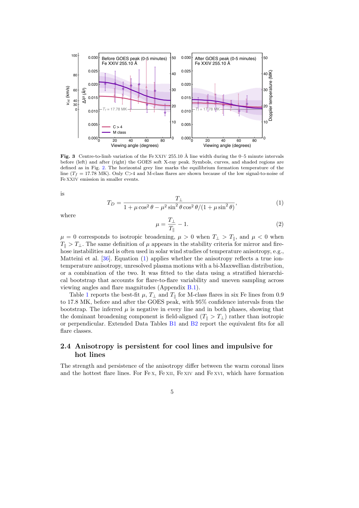

2026

Nonthermal line broadening at solar flare footpoints is primarily field-aligned
Science
Automatically selected representative figure for the first-author paper.
Figure
Representative figure selected automatically from the paper PDF.
2026

Chromospheric dynamics and turbulence regulate the solar FIP effect
Science
This paper tests how chromospheric heating, acoustic flux, and turbulence affect first ionisation potential bias in ponderomotive-force models. Using HYDRAD simulations coupled to FIPpy, it shows that dynamic chromospheres can still reproduce fractionation, while stronger turbulence suppresses it and low acoustic flux can change the predicted ordering of elemental enhancement.
Figure
This figure shows one heated-loop simulation at t = 700 s, including temperature, density, velocity, ponderomotive acceleration, ionisation fractions, and the resulting FIP bias pattern. It summarizes how the altered chromospheric structure changes the fractionation behaviour of low-, intermediate-, and high-FIP elements.
2025

Systematic non-thermal velocity increase preceding soft X-ray flare onset.
Science
This paper uses a Hinode/EIS catalogue of 1449 flares from 2011 to 2024 to measure how EUV non-thermal velocities evolve before flare onset. It finds that line broadening typically increases several minutes before GOES soft X-ray start, with onset timing varying with flare class and earlier precursor signatures in M-class events.
Figure
These two panels were used in the AAS Nova feature on the paper. The first shows a representative increase in non-thermal velocity before an M-class flare peak, while the second contrasts precursor timing in flares without CMEs and with CMEs, illustrating the earlier and broader precursor signatures associated with eruptive events.
2024

Spatially resolved plasma composition evolution in a solar flare – The effect of reconnection outflow.
Science
This paper follows the spatial and temporal evolution of FIP bias in the 2017 September 10 X8.2 flare using 12 Hinode/EIS rasters and two composition diagnostics. It finds persistent high-FIP-bias plasma at loop tops and near-photospheric plasma at footpoints, consistent with mixing between high-FIP-bias downflows from the plasma sheet and low-FIP-bias chromospheric evaporation.
Figure
This illustration summarizes the interpretation proposed in the paper. During the impulsive phase, heating reaches the chromosphere below the fractionation layer; low-FIP-bias chromospheric plasma then evaporates upward into the lower loop, while high-FIP-bias plasma from reconnection downflows remains near the loop top. The right-hand sketch also highlights how loop-top and footpoint X-ray sources sample these different composition regimes.
2023

Understanding the Relationship between Solar Coronal Abundances and F10.7 cm Radio Emission.
Science
This paper examines why Sun-as-a-star coronal composition and F10.7 remain correlated but become nonlinear at higher activity. Using joint JVLA, Hinode/EIS, and SDO observations of AR 12759, it shows that strong sunspot magnetic fields and gyroresonance emission change the local relationship between radio flux and coronal abundances.
Figure
This figure lays out the multiwavelength view of the active region on the two observing days: AIA, HMI, Si/S composition, and Stokes I and V radio maps. It also defines the regions used in the paper to compare FIP bias with the different radio emission components.
2021

The Evolution of Plasma Composition during a Solar Flare.
Science
This paper studies how plasma composition changes during a small solar flare using Hinode/EIS. It finds a clear flare-time increase in the Ca/Ar diagnostic, while the Si/S diagnostic remains comparatively unchanged, pointing to dynamic fractionation or differential line-response effects during the event.
Figure
This figure compares composition and intensity-ratio maps from three EIS rasters through the flare. It shows how the composition signal evolves across the flaring region and how the X-shaped structure becomes clearer in the later raster.